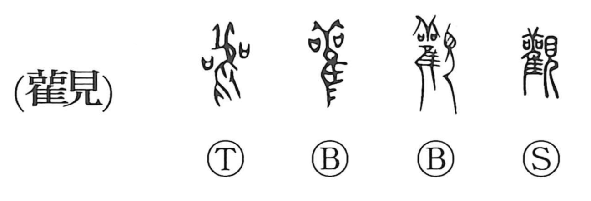

観

Kun: miru | On: kan
to view ・ to observe ・ to examine ・ outlook
Explanation
Originally written 觀, this is a phono-semantic character: the phonetic element 雚 depicts a sacred stork used in bird divination, and with 見 it evokes the act of watching to discern the gods’ will. In this early setting—closely associated with agricultural rites like those reflected in 勧—the character conveyed divinatory observation and careful discrimination. Over time its sense broadened to ordinary seeing, viewing, and close examination. It could also denote a tall lookout building from which one surveys the distance.